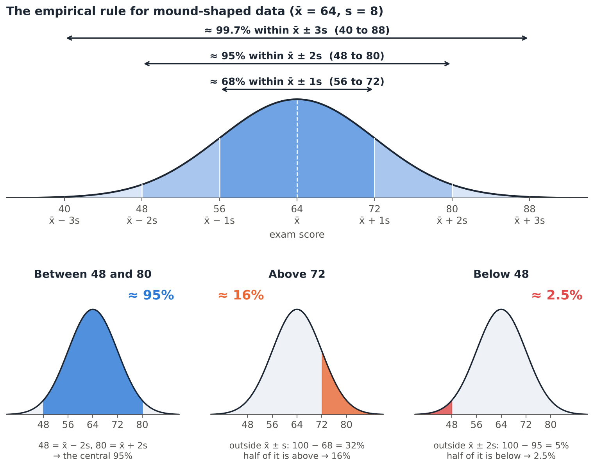
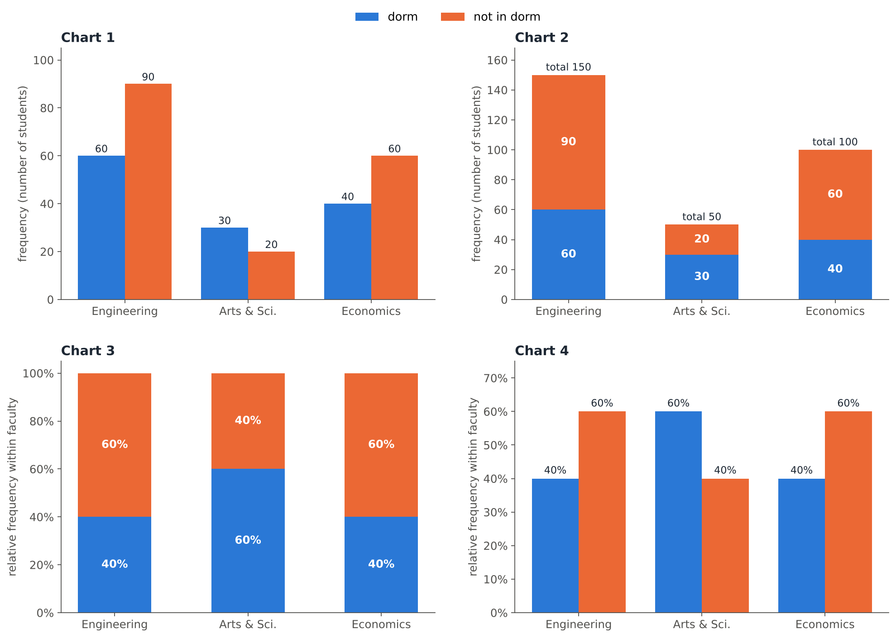

Recitation 5
Review
⚡ Warm-up: lightning round
True or false? Answer as fast as you can; the review at the end explains every statement.
- A parameter is a numerical summary of a sample.A parameter describes the population; a statistic describes a sample.
- Temperature in °C is measured on an interval scale.Differences are meaningful, but 0 °C is not "no temperature": no true zero.
- The median is more robust to outliers than the mean.The mean uses every value, so one extreme value can pull it far away; the median only depends on the middle.
- The sample variance divides the sum of squared deviations by n.The sample variance divides by n − 1.
- If every value is multiplied by 2, the standard deviation is multiplied by 2.For y = a + bx, sy = |b| sx.
- A histogram is a good graph for the blood types of 300 donors.Blood type is categorical; histograms are not suitable for qualitative data.
- In a right-skewed distribution the mean is usually larger than the median.The long right tail pulls the mean up.
- r = −0.9 shows a weaker linear relationship than r = 0.5.Strength is |r|: 0.9 > 0.5. The sign only gives the direction.
- A box plot always shows whether a distribution is bimodal.A box plot uses only five numbers; a violin plot is needed to see two peaks.
- Time-series data are collected at successive points in time.Cross-sectional data are collected once; time-series data at successive points in time.
- By the proximity principle, objects that are close together are seen as one group.That is the Gestalt law of proximity.
- Starting a bar chart's y-axis at a non-zero value can exaggerate differences.A bar's length represents its value; cutting the axis makes small differences look huge.
METU wants to know the average weekly study time of all its 30,000 students. A survey of 500 students finds an average of 14.2 hours. Classify each item.
- All 30,000 METU students :: Population
- The 500 surveyed students :: Sample
- The average weekly study time of all 30,000 students (unknown) :: Parameter
- 14.2 hours :: Statistic
- Weekly study time :: Variable
Population ↔︎ Parameter, Sample ↔︎ Statistic. The 14.2 hours is computed from the sample, so it is a statistic used to estimate the unknown parameter.
Tick (✔) a cell whenever the scale provides that property. Click a cell to add or remove a tick, then press Check.
- The “order” of values is known
- “Counts”, aka “Frequency distribution”
- Mode
- Median
- Mean
- Can quantify the difference between each value
- Can add or subtract values
- Can multiply and divide values
- Has a “true zero”
Each scale keeps everything the previous one provides and adds one new property:
Nominal (labels, counts, mode) → Ordinal (+ order, median) → Interval (+ measurable differences, mean, + and −) → Ratio (+ true zero, × and ÷)
- Nominal (blood type, city): only counts and the mode.
- Ordinal (letter grades, satisfaction 1–5): ranked, so the median exists; the gaps are not measurable, so no mean.
- Interval (°C, calendar year): 30 °C − 20 °C = 10 °C makes sense, but 40 °C is not twice as hot as 20 °C (no true zero).
- Ratio (height, income, time): 0 means "none", so 180 cm is twice 90 cm.
Choose the scale and the type of data for each variable.
- A student’s hometown :: Nominal ; Qualitative
- T-shirt size (S, M, L, XL) :: Ordinal ; Qualitative
- Year of birth :: Interval ; Quantitative
- Monthly rent in ₺ :: Ratio ; Quantitative
- Number of siblings :: Ratio ; Quantitative
- Course evaluation from 1 (poor) to 5 (excellent) :: Ordinal ; Qualitative
- Year of birth has no true zero (year 0 is not “no time”), so it is interval.
- Number of siblings is a count with a true zero (0 = no siblings): ratio, and it is discrete.
- A 1–5 rating is ordered, but the gaps between the categories are not measurable: ordinal.
Which one doesn’t belong? Three of these variables are measured on the same scale.
- Eye colour
- Marital Status
- Job Seniority
- Car Brands
- Nationality
Job Seniority is ordinal (Junior < Mid-level < Senior < Executive); the other four are nominal: categories with no natural order.
Six students report how much they spent on coffee last week (₺): 40, 55, 35, 70, 45, 55. Type each answer and press Enter. Round to 2 decimals.
A student found the quartiles and fences of these 12 ordered values:
12, 15, 18, 20, 22, 25, 27, 30, 31, 35, 40, 58.
Click the first line that contains a mistake.
- For Q1: np = 12 × 0.25 = 3.
- np = 3 is a whole number, so Q1 is the 3rd ordered value: Q1 = 18.
- For Q3: np = 12 × 0.75 = 9, a whole number, so Q3 = (31 + 35) / 2 = 33.
- IQR = 33 − 18 = 15.
- Upper fence = 33 + 1.5 × 15 = 55.5, so 58 is a potential outlier.
Line 2 is wrong. Q1 is the median of the lower half of the data, and Q3 is the median of the upper half of the data. By the lecture rule, when np is an integer we average the np-th and (np+1)-th values: Q1 = (18 + 20) / 2 = 19. Line 3 does this correctly for Q3.
Fence formulas:
Lower fence = Q1 − 1.5 × IQR
Upper fence = Q3 + 1.5 × IQR
Any value below the lower fence or above the upper fence is a potential outlier.
Corrected: IQR = Q3 − Q1 = 33 − 19 = 14, so 1.5 × IQR = 21.
Lower fence = 19 − 21 = −2
Upper fence = 33 + 21 = 54
No value is below −2, but 58 is above 54, so 58 is a potential outlier.
A box plot is drawn from this five-number summary: minimum 12, \(Q_1\) = 30, median 38, \(Q_3\) = 46, maximum 80.
\(IQR =\) , lower fence \(=\) , upper fence \(=\) .
The number of potential outliers you can be sure about from this summary is : the maximum, 80.
\(IQR = 46 - 30 = 16\); \(1.5 \times 16 = 24\); fences \(30 - 24 = 6\) and \(46 + 24 = 70\). The minimum 12 is inside, the maximum 80 is outside: it is drawn as a separate point.$.
Which mean should you use?
- The average of your five midterm scores :: Arithmetic mean
- The average yearly growth of an investment that changed by +10%, −5% and +20% :: Geometric mean
- The average speed for a trip with three equal 100 km legs at 60, 90 and 120 km/h :: Harmonic mean
- The average price per litre when you spend exactly ₺1,000 on fuel each week :: Harmonic mean
- The average height of a basketball team :: Arithmetic mean
- The average yearly growth factor of a city’s population :: Geometric mean
Values that add up → arithmetic; values that multiply (growth factors 1.10 × 0.95 × 1.20) → geometric; rates over equal amounts of the “per” quantity (equal distances, equal money) → harmonic.
Daily maximum temperatures in a city have mean \(\bar{x} = 20\) °C and standard deviation \(s = 5\) °C. Converted with \(F = 32 + 1.8\,C\):
mean \(=\) °F, standard deviation \(=\) °F, variance \(=\) °F².
Can we compare the variability with the coefficient of variation? (yes / no)
\(\bar{y} = 32 + 1.8(20) = 68\); \(s_y = |1.8| \times 5 = 9\); \(s_y^2 = 1.8^2 \times 25 = 81\). Adding 32 moves the data but does not change the spread.
No: temperature in °C or °F is an interval scale with no true zero, and the CV is meaningful only for ratio-scale data. (In °C the CV would be 25%, in °F 13.2%: the same data, two different “CVs”.)
Exam scores are mound-shaped with mean 64 and standard deviation 8. By the empirical rule:
About % of the students scored between 48 and 80.
About % scored above 72.
About % scored below 48.
- 48 and 80 are \(64 \pm 2(8)\): about 95%.
- 72 is \(64 + 8\): 68% lie within \(\pm 1s\), so \(32\%\) are outside, half of them above: 16%.
- Below \(64 - 2(8) = 48\): half of the 5% outside \(\pm 2s\): 2.5%.

Use the mean and the median to decide the shape.
- House prices: mean ₺4.2 M, median ₺3.1 M :: Positively (right) skewed
- Scores on a very easy quiz: mean 8.1, median 8.8 (out of 10) :: Negatively (left) skewed
- Heights of adult women: mean = median = mode = 163 cm :: Symmetric
- Waiting times at a bank: mean 9 min, median 6 min :: Positively (right) skewed
The mean is pulled towards the long tail: mean > median → right tail; mean < median → left tail. Prices and waiting times cannot go below 0 but can be very large; easy-quiz scores have a natural maximum.
40 students reported how many minutes they spend on social media before breakfast. Click the modal class.
The modal class is the class with the highest frequency: 10–20 minutes (12 students). The long tail on the right makes the histogram positively skewed.
Same histogram (n = 40). Click the class that contains the median.
With n = 40, the median is the average of the 20th and 21st ordered values. Cumulative frequencies: 4, 16, 25, … The first 16 values are below 20 minutes and values 17–25 are in 20–30, so the median class is 20–30, one class to the right of the modal class, because of the right skew.
Compute \(r\) by hand for these four points.
| \(x\) | 2 | 4 | 6 | 8 |
|---|---|---|---|---|
| \(y\) | 3 | 7 | 5 | 9 |
\(\bar{x} =\) , \(\bar{y} =\) , \(\sum(x-\bar{x})(y-\bar{y}) =\) , \(\sum(x-\bar{x})^2 =\) , \(\sum(y-\bar{y})^2 =\)
\(r =\) : a strong linear relationship.
Deviations: \(x - \bar{x} = -3, -1, 1, 3\); \(y - \bar{y} = -3, 1, -1, 3\). Products: \(9 - 1 - 1 + 9 = 16\). \(\sum (x-\bar{x})^2 = 20\), \(\sum (y-\bar{y})^2 = 20\).
\[r = \frac{16}{\sqrt{20}\sqrt{20}} = \frac{16}{20} = 0.8\]
Choose the best option.
- 500 students’ number of siblings vs number of pets: only 20 dots are visible :: Add jitter
- Histograms of a class of 30 and a class of 150 drawn with frequencies :: Use relative frequencies
- Height, weight and age must be shown in one graph :: Bubble chart
- Tip vs bill for cash and card payers, drawn with different y-axes :: Comparative scatter plots, same scales
- A histogram of 400 values with only 3 classes looks flat and boring :: Use more, narrower classes
- 36 monthly sales values were drawn as a histogram :: Line chart
- Two sections with identical box plots; one may have two groups of students :: Violin plot
Overplotting → jitter; different group sizes → relative frequencies; three numerical variables → bubble chart; groups compared → same scales; too few classes hide the shape → more classes (400 values → 9–10); time order matters → line chart; a box plot hides bimodality → violin plot.
A survey asked 300 students for their faculty and whether they live in a dormitory:
| Faculty | Lives in dorm | Not in dorm | Total |
|---|---|---|---|
| Engineering | 60 | 90 | 150 |
| Arts & Sciences | 30 | 20 | 50 |
| Economics | 40 | 60 | 100 |
| Total | 130 | 170 | 300 |
Use the table above.
Relative frequency of Engineering students: ; of Arts & Sciences students: ; of Economics students: .
Within each faculty, the percentage who live in a dorm: Engineering %, Arts & Sciences %, Economics %.
Overall, % of the 300 students live in a dorm.
- Faculty: \(150/300 = 0.50\), \(50/300 \approx 0.17\), \(100/300 \approx 0.33\) (they sum to 1).
- Within a faculty, divide by that faculty’s total (the row total): \(60/150 = 40\%\), \(30/50 = 60\%\), \(40/100 = 40\%\).
- Overall: \(130/300 \approx 43.3\%\).
Draw the relative-frequency bar chart of Faculty (all 300 students). Set the height of each bar, then press Check (±2 percentage points counts as correct).
Heights: 150/300 = 50%, 50/300 ≈ 17%, 100/300 ≈ 33%. With frequencies the bars would be 150, 50 and 100: exactly the same shape, only the y-axis labels change, because every count is divided by the same n = 300.
Draw the 100% stacked bar chart of dorm use within each faculty. Each slider sets the dorm part; the not in dorm part fills the rest up to 100%.
Dorm shares: 60/150 = 40%, 30/50 = 60%, 40/100 = 40%. Every bar is 100% tall, so a 100% stacked bar chart compares the proportions within groups, but it no longer shows how big each group is.

Click the part of this violin plot that shows the interquartile range.
Inside a violin: the thick black bar is the IQR, the thin line is the 95% confidence interval, the white dot is the median, and the width of the outline is the density (wide = many values). This violin is bimodal, which a box plot could not show.
A student describes a correlation heatmap and the scatter plot matrix of four variables. One sentence is wrong. Click it.
- The heatmap shows r = 0.62 for study hours and GPA: a positive linear relationship.
- All values on the diagonal are 1, because each variable is perfectly correlated with itself.
- The heatmap is symmetric: the value for (study, GPA) equals the value for (GPA, study).
- Since r = 0.03 for sleep and GPA, sleep and GPA are not related in any way.
Sentence 4 is wrong. r ≈ 0 only means there is no linear relationship. The drawback of correlation plots: they give no information about nonlinearity. The scatter plot could show a strong curved (e.g. upside-down U) relationship.
Which Gestalt principle is at work?
- In a dashboard, three charts inside one light-grey container are read as one topic :: Common region
- A chart without its border and background still looks complete :: Closure
- In a line chart, one country is orange and all others are grey :: Focal point
- Labels placed right next to their bars are read together with them :: Proximity
- The same colour is used for “2026” in every chart of a report :: Similarity
- The eye follows a smooth trend line through the data points :: Continuity
- A white logo shape is seen “cut out” of a dark background :: Figure-ground
- Three overlapping rings are seen as three simple circles :: Prägnanz
Common region (enclosure) groups what is inside one boundary; closure fills in missing lines; focal point captures the eye with what is different; proximity groups what is close; similarity groups what looks alike; continuity follows smooth paths; figure–ground separates the object from the background; Prägnanz reduces shapes to the simplest form.
A bar chart shows a pass rate of 61% in 2025 and 64% in 2026, with the y-axis starting at 60.
The 2026 bar looks times as tall as the 2025 bar, although the real increase is only percentage points. This is the misleading non-zero trick.
Heights above 60: 1 vs 4 units, so the bar looks 4 times as tall; \(64/61 \approx 1.05\). Bars should start at zero. (The other bad example in Lecture 4: an upside-down axis, which makes rising values look like falling ones.)
[18 pts] The waiting times (minutes) of 10 students at the ring-bus stop, ordered:
8, 11, 13, 14, 16, 17, 19, 21, 24, 41
(a) Median \(=\)
(b) \(Q_1\): \(np = 10 \times 0.25 =\) , so \(Q_1\) is the ordered value: \(Q_1 =\) .
(c) \(Q_3\): \(np = 7.5\), so \(Q_3 =\) .
(d) \(IQR =\) ; lower fence \(=\) ; upper fence \(=\) .
(e) Potential outlier(s): .
(f) Will the mean be larger or smaller than the median?
(a) \(n = 10\) is even: \((16 + 17)/2 = 16.5\).
(b) \(np = 2.5\) is not a whole number, so round up to 3: \(Q_1\) = 3rd value = 13.
(c) \(np = 7.5\) → 8th value = 21.
(d) \(IQR = 8\), \(1.5 \times 8 = 12\): fences \(13 - 12 = 1\) and \(21 + 12 = 33\).
(e) 41 > 33 → potential outlier.
(f) The mean is \(184/10 = 18.4\) > 16.5: the outlier pulls the mean up (right skew).
Marking: (a) 2, (b) 4, (c) 2, (d) 5, (e) 2, (f) 3.
[12 pts] A real-estate report says: “The average flat in our city costs ₺4.2 million.” The median price is ₺3.1 million.
(a) What is the shape of the distribution of prices? (b) Which measure of centre would you report, and why? (c) Which graph would you draw to show the distribution?
Model answer:
(a) Mean > median, so the distribution is positively (right) skewed: a few very expensive flats form a long right tail. (4 pts)
(b) The median (₺3.1 M): it is robust to the few extreme prices, while the mean is pulled up by them and overstates what a typical flat costs. (4 pts)
(c) A histogram (shape, modal class, the long right tail) or a box plot (median, IQR, potential outliers beyond the upper fence). A violin plot also works. (4 pts)
[10 pts] Which statements are true? (+2 for each correct choice, −2 for each wrong choice, minimum 0.)
- The IQR is not affected by an extreme maximum value.
- The coefficient of variation is suitable for comparing temperatures in °C.
- A histogram should have gaps between its boxes.
- If r = 0, the points can still follow a strong curved pattern.
- Relative frequencies allow you to compare two groups of different sizes.
- A pie chart is the best graph for 36 months of sales.
- In a split violin plot, the two halves of each violin show two groups.
- b is false: °C is interval (no true zero); the CV needs ratio data.
- c is false: a histogram has adjoining boxes.
- f is false: time-series data → line chart.
- a: the IQR uses only \(Q_1\) and \(Q_3\), so the maximum doesn’t change it.
[12 pts] A student’s bar chart compares the average GPA of 12 faculties. The bars are in random order, each bar has a different colour, the chart has a thick border and a grey background, and the y-axis starts at 2.0. The message should be: “Our faculty has the highest average GPA.”
Give four improvements and name the principle behind each.
Model answer (3 pts each):
- Simplicity: sort the bars from highest to lowest.
- Focus point: colour only our faculty’s bar; make the others grey.
- Closure: remove the border and background shading; the chart still looks complete.
- Non-zero baseline (bad example): start the y-axis at 0 so the differences are not exaggerated.
- Proximity: put the message title / value label right next to our faculty’s bar.
[8 pts] Choose the most appropriate graph.
- Shape of the distribution of 300 students’ commute times :: Histogram
- Compare the exam scores of 5 sections (centre, spread, outliers) :: Box plots side by side
- Relationship between hours studied and exam score :: Scatter plot
- Monthly number of library visitors over 3 years :: Line chart
- Size, rent and age of flats in one graph :: Bubble chart
- Are faculty and dormitory use (yes/no) related? :: Mosaic plot
- Unusual values among 12 measurements of a boiling point :: Dot diagram
- Rent vs distance to campus for 160 flats :: Scatter plot
1 pt each. One numerical variable → histogram; groups → side-by-side box plots; two numerical variables → scatter plot; three → bubble chart; over time → line chart; two categorical variables → mosaic plot; a small data set and unusual values → dot diagram.
All data sets on this page were created for this recitation. Good luck in the exam! 🍀